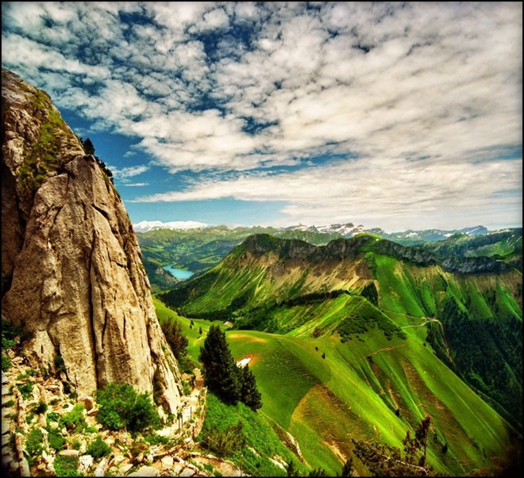

Зеленый - цвет природы, естества, самой жизни, весны. Тот,
кто его предпочитает, боится чужого влияния, ищет способ
самоутверждения, так как для него это жизненно важно. Тот, кто его не любит,
страшится житейских проблем, превратностей судьбы, вообще, всех трудностей.
Зеленый цвет содержит в себе скрытую потенциальную энергию, отражает
степень волевого напряжения, поэтому люди, предпочитающие зеленый цвет, стремятся
к самоуверенности и уверенности вообще. Люди же эксцентричные, добивающиеся
поставленных задач не целенаправленной волевой активностью, а посредством
эмоций, отвергают зеленый цвет как несимпатичный. Наряду с ними, зеленый
цвет отвергают люди, находящиеся на грани психического и физического истощения.